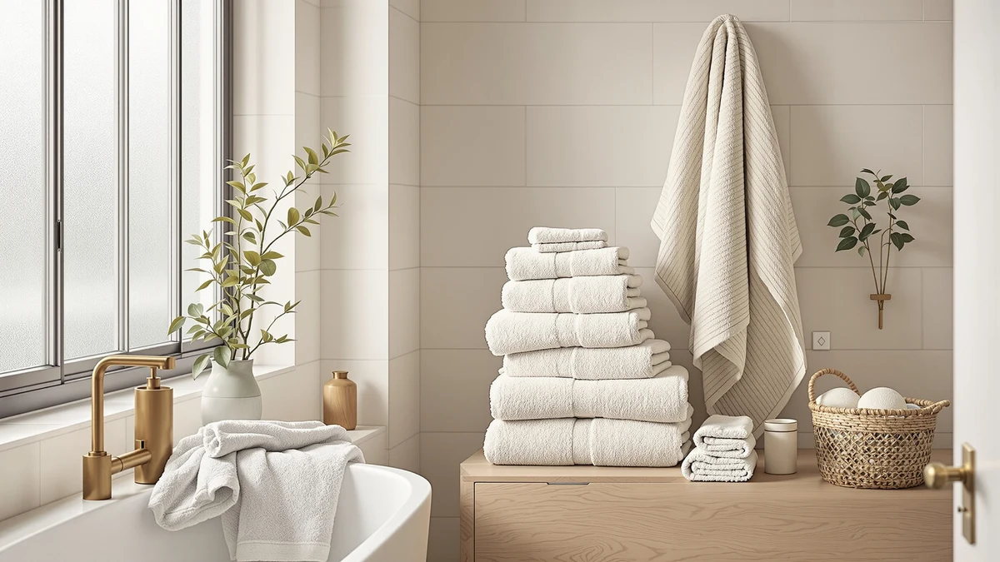

How to Set Up Bath Towels (2026)
Prices and picks verified as of August 2026. Independent, reader-supported reviews.


Things to Know Before You Buy
- Plan for one bar or hook per person. A single towel bar shared by three people turns into a pile of damp towels by the second day, so setting up bath towels correctly starts with enough hanging spots for everyone.
- Buy two to four towels per person. One in use and one drying leaves no gap on laundry day, and a third towel covers guests or a missed wash.
- Wash new towels before the first use. A factory finish on new cotton blocks absorbency until it washes out, usually within one or two cycles.
- Hang towels so they dry within a few hours. A folded, bunched towel on a hook stays damp far longer than one spread open on a bar, and a damp towel breeds odor faster.
- Rotate backups instead of storing them flat in a drawer. A simple shelf rotation keeps every towel getting equal wear, so the whole set ages evenly instead of one towel wearing thin first.
Knowing how to set up bath towels properly turns a cramped, mismatched linen closet into a system that works the same way every morning, with no digging through a drawer for a towel that is actually dry. The process covers more than folding one over a bar. It means measuring the space you actually have, buying the right count for your household, and building a habit that keeps every towel in rotation instead of piling up in the hamper.
The five steps below walk through the setup from the studs out: measuring your bar and shelf space, sizing your towel count to the number of people using the bathroom, washing new towels before their first use, assigning a bar or hook to each person, and folding the backups into a rotation. Follow them in order, and one trip to the store plus about 45 minutes of setup time is enough to fix a bathroom that never seems to have a clean, dry towel when you need one.
What You'll Need
- Supplies: bath towels (two to four per person), hand towels, washcloths, laundry detergent
- Tools: tape measure, towel bar or hooks, wall-mounted rack or open shelf
Step 1: Measure your towel bar and storage space
Start setting up bath towels by measuring what the bathroom can physically hold, not what you assume it can hold. Pull out a tape measure and check the length of every bar, the number of hooks, and the depth of any shelf or basket you plan to use for folded backups.
A standard bath towel measures roughly 27 by 52 inches, and a single bar needs at least 24 inches of clear length to hang one without it bunching against the wall or another towel. If the bathroom serves two or three people, count the bars and hooks you have and compare that number to the number of people using the room daily, since that gap is exactly what step two solves.
Step 2: Calculate how many towels your household needs
A workable rule for how many towels to buy is two to four per person: one in active use, one drying or in the wash, and a third or fourth to cover a missed laundry day or a guest. A household of four typically lands somewhere between eight and sixteen bath towels once you add hand towels and washcloths to the same count. That's the second building block for setting up bath towels for more than one person.
Buy towels in a single weight and fiber where you can. A matched set dries at a similar rate and wears down evenly, so the whole stack looks uniform instead of one thin, overused towel next to three barely touched ones. A set like the White Classic cotton towels below covers a full household in one order. That saves a second trip if the bar count from step one calls for more towels than expected.
Step 3: Wash every new towel before its first use
New towels come off the shelf with a manufacturing finish that helps them look neat in packaging but blocks water from soaking in right away. Skip this step while setting up bath towels and a brand new towel wipes water around instead of absorbing it for the first several uses. That makes a new setup feel worse than the mismatched towels it replaced.
Wash the full new set together in warm water with a normal amount of detergent, and skip fabric softener on this first wash since it coats the fibers and slows the same absorbency the wash cycle is trying to restore. One cycle is usually enough, though a second cycle helps for stiff, heavily treated towels, and either way the set is ready to hang once it comes out of the dryer.
Step 4: Assign a bar, hook, or ring to each person
A shared bar works fine for a single person, but as soon as two or more people use the same bathroom, an unassigned pile of towels turns into a guessing game over whose towel is whose and which one is actually dry. Assign one hook, ring, or section of bar to each person, and if the towels look identical, a different color per person or a small fabric tag solves the mix-up in seconds. This is the step in setting up bath towels that keeps a shared bathroom running smoothly instead of turning into a daily guessing game.
Space matters too. A towel hung flat and spread open across a bar dries in a few hours, while the same towel bunched over a single hook stays damp overnight and starts to smell sooner. If the bathroom only has hooks, favor a wider hook or a double hook that lets the towel hang open rather than folded in half.
Step 5: Fold and rotate your backup towels
Once the daily towels are hung, fold the backups and stack them with the most recently washed towel on the bottom of the pile and the next one due for use on top. That small rotation habit, borrowed from how hotels manage a linen closet, spreads wear evenly across the whole set instead of grabbing the same convenient top towel every time.
Store the stack on an open shelf, in a labeled basket, or in a drawer near the bathroom so swapping a damp towel for a dry one takes seconds rather than a trip to a hall closet. This last step is what makes a bath towel setup last, since towels bought on the same day age evenly and need replacing around the same time, rather than one thin, graying towel showing up in the stack a year before the rest.
Common Mistakes to Avoid
The most common mistake in setting up bath towels is buying enough towels but not enough hanging space to dry them. A stack of eight fresh towels does no good if the bathroom only has one bar, since the extras end up folded on a shelf while the same two towels cycle through wet and half-dry all week. Fix the bar and hook count before adding more towels to the pile.
Skipping the first wash is another frequent error. A new towel straight out of the packaging can take two or three showers before it actually absorbs water the way it should, and people often mistake that slow start for a bad towel when the fix is one cycle in the washing machine.
Hanging towels folded in half over a single hook is a smaller mistake with a bigger effect than most people expect. A folded towel traps moisture between its layers, and a bathroom with poor airflow can grow a musty smell within a day or two. Spread every towel open across a bar whenever the space allows it.
Last, mixing towel weights and fibers within one household muddies the rotation, since a lighter towel dries and wears out faster than a heavier one bought at the same time. Stick to one set, or at least one weight class, so the whole stack ages together instead of in a scattered, uneven order.
Our Top Picks
These three sets cover a full bath towel setup for the whole household, from an everyday workhorse to a heavier upgrade pick, and each one held up well across the specs and owner reviews we compared.

Editor's Pick
Luxury White Bath Towel Set
White Classic's set comes in a plain white that matches any bathroom and covers a full household in one order. It's the simplest starting point for a fresh towel setup.
$39.99
Check Price on Amazon
Best Value
American Soft Linen Luxury 6
American Soft Linen's six-piece set stretches the per-towel cost further than most sets this size, and that helps when you're buying enough towels to fill several bars at once.
$39.99
Check Price on Amazon
Premium Choice
Utopia Towels 8 Piece Luxury
Utopia's eight-piece set covers hand towels and washcloths alongside the bath towels, so one order fills out the entire rotation described in step two.
$37.99
Check Price on AmazonFrequently Asked Questions
How many bath towels do I need per person?
Plan for two to four bath towels per person: one in use, one drying or in the wash, and a spare for a missed laundry day or a guest. A household of four typically needs eight to sixteen towels once hand towels and washcloths join the same rotation. That's the starting math for setting up bath towels in a shared bathroom.
Do I need to wash new bath towels before using them?
Yes. New towels carry a factory finish that blocks water absorption until it washes out, usually within one or two cycles in warm water. Skip fabric softener on that first wash, since it coats the fibers and slows the same absorbency you are trying to restore.
How much towel bar space do I need per towel?
Give each towel at least 24 inches of clear bar length so it hangs open instead of bunching against another towel or the wall. A standard bath towel measures about 27 by 52 inches, so a short bar under two feet forces a fold that slows drying.
Should hand towels and washcloths follow the same setup?
Yes, treat them the same way. Assign each a dedicated hook or bar space, buy two to four per person, and wash a new set before first use the same way you would the bath towels.
How often should I replace bath towels?
Most cotton bath towels start losing absorbency and softness after two to three years of regular washing. Replace a towel sooner if it stays damp longer than it used to or develops a persistent musty smell that a normal wash cycle does not clear.
Verdict
Setting up bath towels the right way comes down to matching the towels you buy to the space you actually have to dry them. Measure the bar and hook count first, size the towel total to two to four per person, wash everything once before the first use, then give each person a dedicated spot and rotate the backups on a shelf. Follow that order and the whole system runs itself after the first week.
The towels themselves matter less than the setup around them, but a heavier, well-made set makes the routine easier to stick to. A plain, absorbent option like the White Classic set above covers a full household in one order and gives you a consistent baseline to build the rotation on, so every bar and hook in the bathroom stays doing its job instead of collecting one damp towel after another.